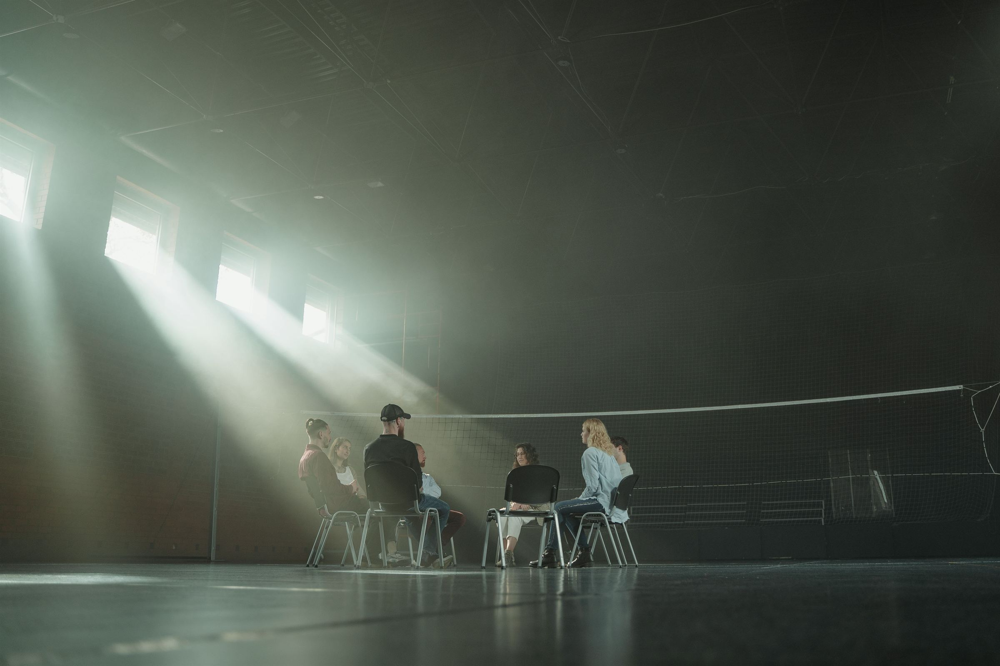
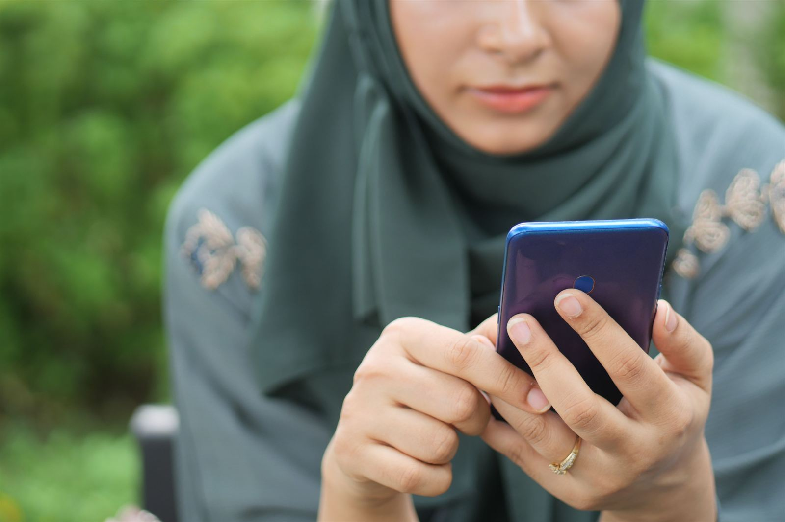

Kamu tidak sendiri. Ceritakan saat kamu siap.
Laporkan kekerasan seksual tanpa harus menyebut nama. Satu pendamping akan menemanimu, dari cerita pertama sampai layanan yang kamu butuhkan.
Dari cerita pertama sampai kamu merasa aman.
Kamu yang menentukan seberapa jauh. Kamu boleh berhenti di langkah mana pun.
-
01
Ceritakan
Isi laporan dalam empat langkah singkat. Tidak perlu akun dan tidak perlu nama asli.
-
02
Simpan kode
Kamu menerima kode laporan dan PIN. Hanya dengan keduanya laporanmu bisa dibuka.
-
03
Didampingi
Pendamping membalas lewat pesan aman dan menawarkan jadwal sesi bicara.
-
04
Dirujuk
Bila kamu mau, kami hubungkan dengan layanan psikologis, medis, atau bantuan hukum.
Ceritamu hanya dibaca oleh orang yang menemanimu.
Isi laporan dan pesan dienkripsi sebelum disimpan. Admin hanya melihat jenis kejadian dan wilayah untuk menugaskan pendamping.
-
Dienkripsi sebelum disimpan
Kronologi, kontak, dan pesan disimpan dalam bentuk sandi. Tanpa kunci, isinya tidak terbaca.
-
Keluar cepat kapan saja
Tekan Esc dua kali. Halaman langsung berganti ke situs cuaca.
-
Setiap akses tercatat
Setiap kali laporan dibuka, sistem mencatat siapa dan kapan. Tidak ada yang bisa membaca diam-diam.
- Jenis
- Pelecehan nonfisik
- Wilayah
- Banyumas
- Kronologi (yang tersimpan)
- q8Jf2Lr+0bW1kT9xVn3aE7m4ZcP0yH6s/uD2gQe5RkA=…
Yang kamu alami mungkin punya nama.
Banyak orang baru sadar belakangan bahwa yang menimpa mereka adalah kekerasan seksual. Empat topik ini bisa jadi awal.

Tidak harus menyentuh untuk menjadi kekerasan.
UU TPKS mengakui sembilan bentuk kekerasan seksual, termasuk komentar merendahkan, pemaksaan, dan penyebaran konten intim tanpa izin.
Baca sembilan bentuknya
Kamu berhak ditangani, dilindungi, dan dipulihkan.
Hak itu mencakup layanan kesehatan, bantuan hukum, dan dukungan psikologis, dan kamu tidak wajib melapor ke polisi untuk mendapatkannya.
Kenali hak-hakmuKalimat pertama yang kamu ucapkan sangat berarti.
"Aku percaya kamu" sering lebih menolong daripada saran apa pun. Pelajari cara mendengar tanpa menghakimi.
Cara mendampingi teman
Kekerasan juga terjadi lewat layar.
Ancaman menyebar foto, pesan cabul, dan penguntitan daring termasuk kekerasan seksual berbasis elektronik. Begini cara mengamankan bukti dan akunmu.
Lindungi dirimu di internetAngka layanan (data contoh)
- Laporan diterima
- 1.284
- Pendamping aktif
- 36
- Sesi pendampingan selesai
- 3.917
Angka contoh untuk prototipe. Versi akhir mengambil data dari sistem, dan kategori dengan kurang dari 5 kasus tidak ditampilkan.
Bacaan terbaru
Semua artikel-
Sembilan bentuk kekerasan seksual menurut UU TPKS
Perilaku apa saja yang diakui hukum sebagai kekerasan seksual.
-

Langkah yang bisa kamu ambil setelah kejadian
Tidak ada urutan yang wajib. Ini pilihan-pilihan yang bisa membantu.
-
Cara mendampingi teman yang bercerita
Apa yang sebaiknya diucapkan, dan apa yang sebaiknya tidak.
Layanan bantuan di sekitarmu.
UPTD PPA, rumah sakit, lembaga bantuan hukum, dan unit PPA kepolisian. Pendamping kami juga bisa membantu menghubungkan.
Buka direktoriBagian dari upaya mencapai SDGs 5: Kesetaraan Gender.
Haven dibangun untuk mendukung target 5.2, yaitu menghapus segala bentuk kekerasan terhadap perempuan dan anak perempuan, di ruang publik maupun pribadi.
Tentang Haven- 5
Kesetaraan gender
Target 5.2 Jalur lapor aman, pendampingan, dan edukasi tentang kekerasan seksual.
- 16
Perdamaian, keadilan, dan kelembagaan yang tangguh
Target 16.3 Rujukan ke bantuan hukum dan unit PPA agar korban bisa mengakses keadilan.
- 3
Kehidupan sehat dan sejahtera
Target 3.4 Pendampingan psikologis untuk pemulihan kesehatan mental.